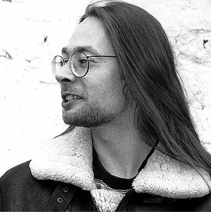
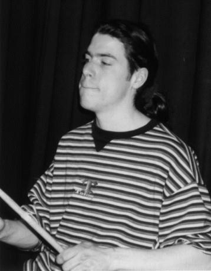
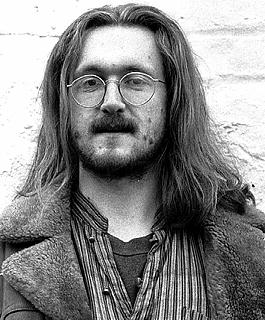
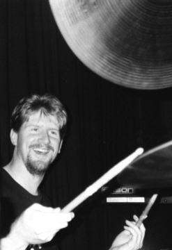
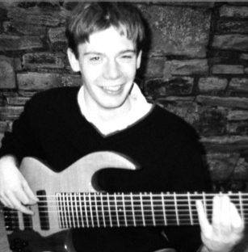
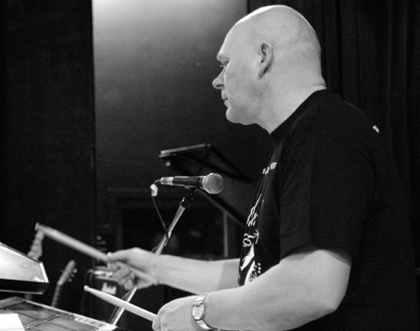
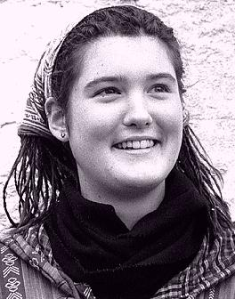

The Jabadaw Hall of Fame
Some old members of Jabadaw who have gone on to better things...
- Douglas Black
- Stefan Hambrook
- Simon Heywood
- Richard Kenyon
- Guy Lightowler
- Pete Lockwood
- Miranda Rutter
- They Also Served...
Douglas Black
Drums, Percussion

Douglas is a graduate of the Royal Northern College of Music
in Manchester. He works as a professional drummer and percussionist.
He was Jabadaw’s secondary drummer from March 1995, and became
our main drummer a year later. Due to personal reasons he stopped
working regularly with us in the spring of 2003.
He comes from somewhere in Scotland, as far as we can tell.
Douglas also played with Creak.
Stefan Hambrook
Drums, Percussion

Stefan was Jabadaw’s first drummer and percussionist. He
studied popular music at Salford University and worked as a
professional musician.
A superb drummer, he contributed inventive and original
arrangement ideas for much of our early repertoire and played on our
first demo tape, which WiggINCEilidhs
said was the best demo tape we’ve ever heard
.
He had an uncanny ability to get to venues with the bare
minimum of direction and ate a lot of polos.
Stefan left Jabadaw when one of the other bands that he played
in got signed. He played his last gig with us at Ringheye Ceilidhs in
early 1996.
Simon Heywood
Bass Guitar

Simon first picked
up a guitar at the age of 12. In his teens he flirted with intense,
introspective songwriting. However, in his early twenties he became a
basically contented and happy person, a crippling blow from which his
songwriting career never recovered. So he switched to bass guitar and
played for several folk dance bands in the North of England before
joining Jabadaw in 1995. He left in 1999 to concentrate on his PhD.
He is hugely interested in folk storytelling, and spent years
conducting postgraduate research at Sheffield University into the
modern storytelling revival. (Was there a huge party when he finished
his thesis? To be honest I can’t remember. Must have been good.) He now
teaches and performs regularly as a singer, songwriter and storyteller.
Richard Kenyon
Drums, Percussion

Richard played for Jabadaw when Douglas was busy. He plays all
styles of drumming, performing live and recording. He plays Yamaha
drums and Zildjian cymbals. Richard’s other groups are
Lazy Eye,
Iconic Phare,
and The Dean O’Shea Group.
Richard is a self-confessed Sting obsessive. Well, it takes
all sorts.
Guy Lightowler
Bass Guitar

Not a character from a Star Wars movie, but Jabadaw’s funkiest ex-bassman.
With an amp the size of a small building and a bass with more strings
attached than a
very stringy thing he more than made his presence felt on stage.
He’s been described as a great bloke, musical superstar and
general sex-god. Um, by himself, that is.
After a superb festival season in 2002, we were stunned when
he announced that he was hanging up his bass... to get a day job. In an
office.
{kind=link}
Pete Lockwood
Drums, Percussion

Pete played his first gig with Jabadaw at Chippenham
Folk Festival in 2003 and started working regularly with us in
December 2003. There is no truth in the rumour that Simon and Martin
asked him to join so they would no longer be the oldest members of the
band.
Once described as the RoboCop of the folk world
, Pete also
plays saxophones and keyboards. He’s played in several rock, pop and
soul bands, making appearances on The Old Grey Whistle Test and Top of
the Pops.
Pete left Jabadaw in 2006 to concentrate on his work with
The Cock and Bull Band and
Asha.
Miranda Rutter
Violin, Viola

Miranda
comes from Sherborne, Dorset and started
playing the viola in early childhood. She became interested in the
English folk tradition and took up the violin in 1994. She also plays
piano accordion. Her accordion teacher was Peter Shuttler of
the Yetties.
She joined the band in 1996, when she was studying social
anthropology at Manchester University. (She got a first.) A musical
perfectionist who always gave 100% in rehearsal or performance, she
played with us at several major festivals and ceilidhs and recorded the
Jabadaw Trio tape and our first CD with us.
She left the band to go working and travelling through
Australia and South America. She played her last gig with us at
Bromyard
Folk Festival in 2001.
Miranda also played with Fika, Jabadaw Trio, and in a duo with
Dave Shepherd. She currently plays in Methera and teaches at the
English Acoustic Collective Summer School.
They Also Served...
Ian Beestin (drums), Adam Courthold (drums), Nicholas Dew (bass / electric guitar), Nigel Holmes (bass), Dave Lawley (drums), Paul Madigan (bass), Mike Salter (drums / percussion), Bill Thompson (bass), Richie Waldock (bass), Simon (drums). Thanks to all of them.